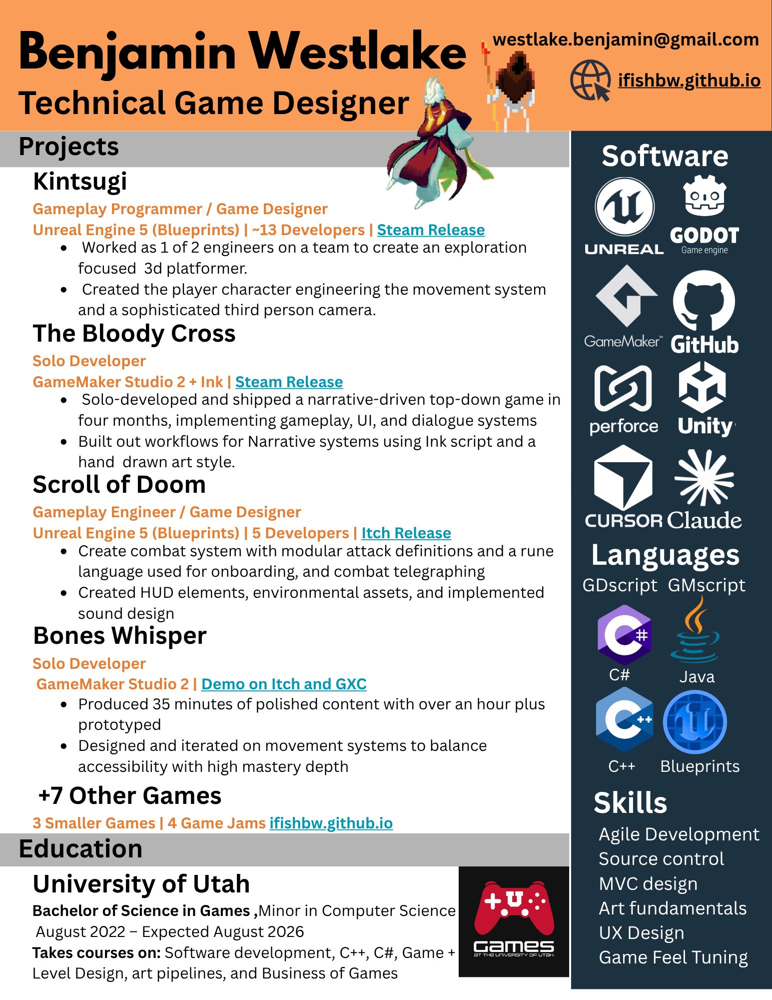

Benjamin
Westlake
Portfolio
Skills
About
Contact
Resume ↗
←
Back to Portfolio
Resume
Benjamin Westlake — Technical Game Designer. Updated May 2026.
Download PDF
Open PNG
Role
Technical Game Designer
Status
Open to Opportunities
Education
B.S. Games
University of Utah
Updated
May 2026
Preview · 1 page

←
Back to all projects